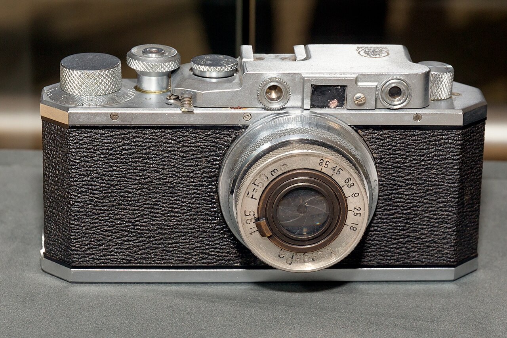

Canon AE-1
La primera SLR con un microprocesador. Vendió millones de unidades y puso la réflex al alcance del aficionado.
Ver ficha de la AE-1Historia, tecnología y cámaras emblemáticas de una marca que nació en un pequeño laboratorio de Tokio.
Visitas: 0
En 1934 un pequeño laboratorio japonés construyó el prototipo de la primera cámara de 35 milímetros fabricada en Japón. La llamaron Kwanon.
Nueve décadas después, esa empresa es uno de los fabricantes de equipamiento fotográfico más grandes del mundo. Este sitio recorre esa historia: los modelos que marcaron un antes y un después y el salto del carrete al sensor digital.

La SLR dejó de ser una herramienta de especialistas cuando el precio y la automatización se encontraron en el mismo cuerpo.
La primera SLR con un microprocesador. Vendió millones de unidades y puso la réflex al alcance del aficionado.
Ver ficha de la AE-1Canon dejó la montura FD y lanzó la montura EF, totalmente electrónica, con el motor de enfoque dentro del objetivo.
Ver las monturas de CanonLa DSLR que bajó de los mil dólares y llevó el sensor digital al público general.
Ver fotos de la EOS 300DEl nombre Kwanon viene de Kannon, la deidad budista de la misericordia. Al salir al mundo, la marca adoptó la grafía Canon, más fácil de pronunciar fuera de Japón.